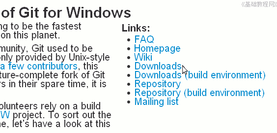
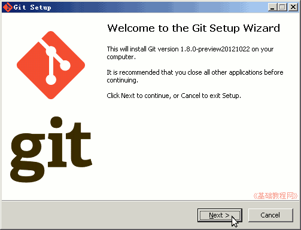
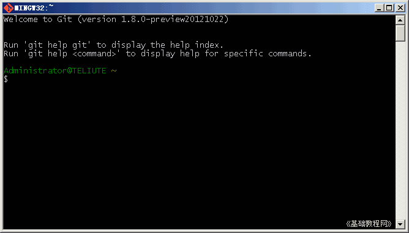
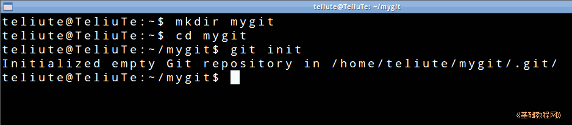
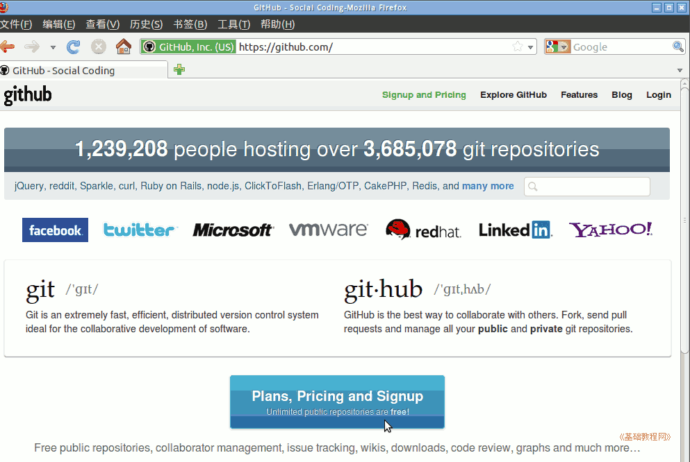
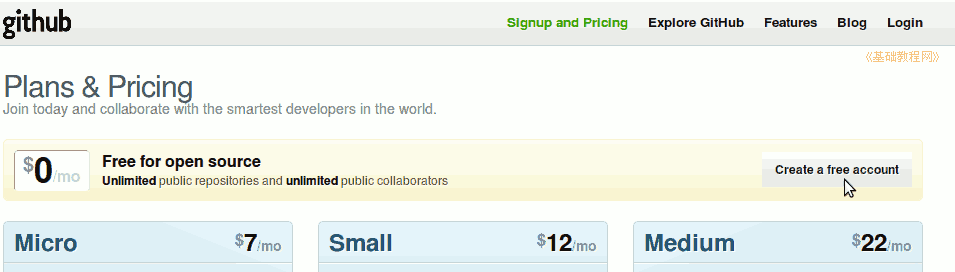
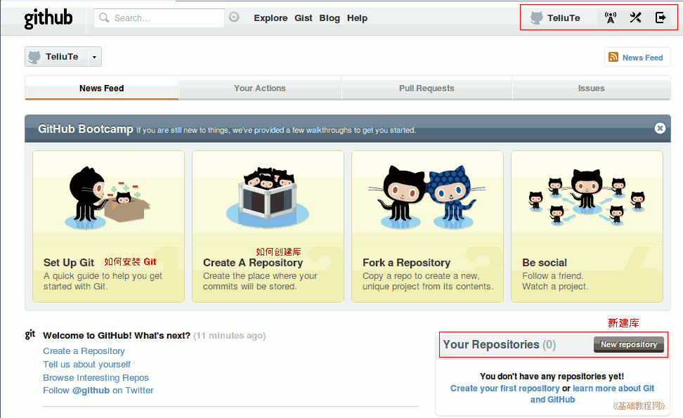

git 操作指南
作者：TeliuTe 来源：基础教程网
一、安装和注册 返回目录 下一课git 可用在 Windows 和 Linux 平台上；
1、安装 git
1）Ubuntu 在软件中心或者新立得中搜索安装 git，也可以在终端输入 sudo apt-get install git
安装完成后，在终端输入 git --help 可以查看简单的帮助；
2）Windwos 下安装，打开网址：http://msysgit.github.com/，在右侧找到 downloads，点击进入下载页面；

3）在出来的下载页面中，点击第一行的第一个 Git-1.8.0-preview20121022.exe，点击下载；
4）下载后双击安装，在出来的对话框中，一路点“Next”直到完成；

5）安装完成后，双击桌面上的 Git Bash 图标；

6）双击图标，出来一个命令行窗口，在这个窗口中输入各个命令；

2、设置 git
2）在$后面输入命令 mkdir mygit ，在自己的主文件夹中，新建一个文件夹，名称为 mygit
~$ mkdir mygit
3）然后接着输入命令 cd mygit 进入文件夹，再输入 git init 激活这个目录；
~$ cd mygit
~$ git init

4）提示成功创建了一个空的库，以后本地的操作将在这里进行，然后输入下面的命令标识自己的信息，双引号里的姓名和邮箱改成自己的；
~$ git config --global user.name "TeliuTe"
~$ git config --global user.email "teliute@163.com"
3、注册 github 账号
1）注册github可以得到一个免费空间，打开浏览器，输入网址 https://github.com，点击进入；

2）点击中间的一个大的注册按钮，在出来的页面中，点击右边的创建免费账号；

3）在出来的页面中，依次输入自己的用户名、邮箱、密码(密码要有字母和数字至少7位)，然后点下边的“Create an account”创建按钮；
4）创建成功以后，进入常用任务页面，右上角有退出和登录，这样也获得了一个免费空间；

本节学习了安装 git 的基础知识，如果你成功地完成了练习，请继续学习下一课内容；
本教程由86团学校TeliuTe制作|著作权所有
基础教程网：http://teliute.org/
美丽的校园……
转载和引用本站内容，请保留作者和本站链接。